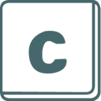

Education
- National University of SingaporeAug 2016 - Present
- Bachelor of Computing in Computer Science. GPA: 4.81/5.00 (First Class Honours)
- Singapore PolytechnicApr 2011 - Apr 2014
- Diploma in Chemical Engineering. GPA: 3.67/4.00
- Diploma-Plus Certificate in Engineering Mathematics and Science
Experience
- Ethereum Tech, Freelance Web DeveloperOct 2017 - Present
- Created the front-end of a cryptocurrency mining dashboard with Vue.js.
- Ministry of Defence, Personnel Systems AnalystDec 2014 - Aug 2016
- Awarded DMG Excellence Award (Individual) for displaying exemplary attitude towards work.
- Simulated and analysed personnel movement using System Dynamics.
- Wrote VBA macros and SQL queries for Microsoft Access and Excel.
- Alpha Consulting Engineers Pte Ltd, System Administrator InternMar 2014 - Jul 2014
- Administered Windows servers and clients using IIS and Active Directory.
- Redesigned homepage using HTML5, CSS and JavaScript.
- Implemented features in the intranet page using jQuery, PHP and MariaDB/MySQL.
Projects
- iOS and Android app where users matchmake their friends.
- Won 2nd prize for CS3216 Software Product Engineering for Digital Markets in NUS School of Computing Term Project Showcase (11th STePS).
- Released app to iOS App Store and Google Play Store, hit 300 users within 24 hours.
- Led front-end development using Vue.js and Cordova.
- Demo: perfectpear.me, Source: github.com/Pear-App/pear-client
- collaborate!Jun 2017 - Aug 2017
- Real-time collaborative webapp that simulates a table top discussion.
- Awarded honourable mention in the Apollo 11 (advanced) category of NUS's Orbital 2017.
- Led front-end development using React + Redux and Socket.io.
- Wrote and deployed back-end using Node.js and Koa.
- Demo: collaborate-app.herokuapp.com, Source: github.com/goweiwen/collaborate
 ivle-syncAug 2016 - Present
ivle-syncAug 2016 - Present- Desktop application to automatically downloads files, announcements, and webcasts from NUS's IVLE portal.
- Created and maintained application built in Python 3.
- Source: github.com/goweiwen/ivle-sync
Preferred Languages and Technologies
- JavaScript, HTML/CSS, Python, Java, Kotlin, Haskell, Elm, Ruby, PHP, SQL
- Vue.js, React, Express, Koa, MongoDB, Flask, Ruby on Rails, Laravel
Personal Interests
- Languages: English (native), Chinese (native), Japanese (conversational, JLPT N3)
- Hobbies: Leathercraft, Electronics, Drawing